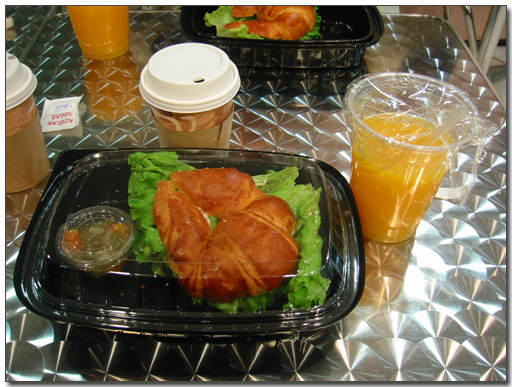
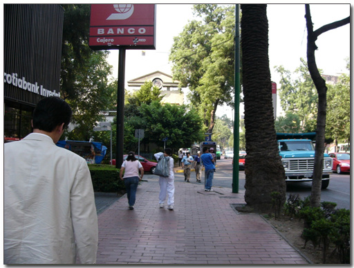

부푼 꿈을 안고 멕시코에 왔다.


- 주로 구경하는 것이 호텔에서 바깥 구경하기.
- 저멀리 산 비슷한게 있는데, 혹시 저기에 피리미드가 있을려나?
설마 멕시코까지 왔는데 마야문명의 맛보기라고 보겠지 하고..
그리고 고산병도 있다. 같이 간 배상우씨는 고산병으로 거의 초죽음이 되었다. 나는 비록 고산병에 걸리지는 않았지만, 저기압때문의 혈관이 잘 터져서 그런지 몰라도 아침마다 코피를 흘렸다.
- 한국에서 가져온 커피믹스가 빵빵하다. 해발 2천미터가 넘는 곳의 저기압으로 이렇게 되나 보다. 뜯으면 뻥하고 터진다.
- 내가 묵은 피에스타인 호텔. 비추다. 비싸고 아침도 포함안되어 있고, 네트웍도 엄청 느리고, 하루에 인터넷 사용료를 만원이나 내야 한다.
이곳 멕시코에서의 일은 사업자 Telcel IOT 통과를 위해 여기 벤더인 Zonda 회사로 출근하여 코드 수정하고 테스트하는 일. 매일 아침 8시에 회사로 출근하였다.
- 회사로 출근하는 길. 호텔에서 걸어서 15분 정도 걸리는 가까운 거리에 있다.
- 멕시코 사람들은 주로 아침을 밖에서 사먹는가 보다.
- 이것은 또띠 파는 가게.
- 이것은 무슨 햄버거 파는 가게 같은데.. 암튼 아침에 노점상들이 많다.
- 거리에는 또한 구두방도 많은 데, 저렇게 높은 의자에 앉아 있으면 구두를 닦는 시스템이다.
- 야밤에는 셔터 내리고 방탄복까지 입고 24시간 영업하는 편의점이 아침이라 다 열었군.
- 내가 출근하는 곳. Zonda 사무실이다. 세계무역센터 28층에 있다.
- 사무실의 무슨 교육장 처럼 생긴 공간에서 장비를 펴고 일을 한다.
호텔에서 아침을 안주다보니, 아침을 사 먹는다. 아침은 주로 무역센터 내에 있는 간단한 샌드위치집에서 먹었다. 아침도 무지 늦게 먹는다. 보통 11시쯤에서야 아침을 먹었다.

- 나의 아침 식사. 샌드위치에 오렌지주스, 그리고 커피. 우리돈으로 3500원 정도 한다.
- 같이 아침을 먹는 싱가폴 엔지니어
아침이 늦다보니, 점심도 늦게 먹는다. 여기 멕시코의 점심 시간 자체가 꽤 늦다. 보통 오후 3시쯤이 점심시간이고, 퇴근 시간이 6시. 그러다 보니, 점심 먹고 얼마 안 있으면 퇴근을 하게 된다.
점심은 Zonda 직원인 마리오와 같이 먹는데, 건물 밖에 있는 식당에 주로 먹었다.
- 점심 먹으러 가는 길. 내 멕시코 출장의 유일한 바깥 구경이라 할 수 있다.
- 멕시코의 횡단보다는 좀 이상하다. 전혀 보행자를 위해 존재하는 것처럼 보이지 않는다.
- 이번에 들어간 곳은 노천까페.
- 점심 시간이라 사람들로 제법 차 있다.
- 메뉴판이라고 뭐 있는데, 뭔 소리인지는 모르겠다.
- 마리오가 추천한 메뉴. 치킨 스프다. 맛은 그럭저럭 맛있는 편.
- 그리고 이것도 무슨 스프인데, 맛이 기억이 안나는군.

- 메인 메뉴. 내가 고른게 멕시코 음식이었는데, 이름을 모르겠군. 아무튼 크다.
- 반쪽이 내 손보다 더 크다. 반쪽만 먹어도 이미 배는 포화상태.
- 멕시코에 두달째 억류되어 있는 페이팡. 얼굴 생긴대로 무척 착하다.
- 또다른 점심 메뉴. 이번엔 멕시코식 햄버거다.
- 역시 양으로 승부한다. 다 못 먹었다.
- 밥 먹는 와중에도 전화기에 대해 이야기를 하는 마리오와 페이팡.
- 식당에 따라 주문하는 방식이 다른데 내가 주로 갔던 식당은 이렇게 로또 번호 고르는 것처럼 주문을 한다.
- 이게 식당 내부
멕시코에서는 별로 움직이질 못 하다 보니, 다른 교통 수단을 타볼 기회도 별로 없었다. 유일하게 타본게 택시다. 택시도 두종류가 있는 것 같았다. 미터 택시와 흥정형 택시. 흥정형이 비싼 택시인데, 호텔에서 회사까지 우리돈 4~5천원 정도를 부르더군.
- 멕시코시티의 가장 대중적인 택시. 저게 폭스바겐 비틀이던가? 기본요금 천원부터 시작한다.
- 비틀 택시 내부. 조수석은 아예 의자 자체가 없다.
- 도로에는 차 정차시마다 앞유리창을 닦으로 돈을 버는 사람들이 많은 편이다.
- 하지만, 회사에서 호텔까지 워낙에 가까운 탓에 대부분 이렇게 걸어서 출퇴근을 하였다.
- 건기라서 하늘이 쾌정한 편이다.

- 하지만, 회사에서 호텔까지 워낙에 가까운 탓에 대부분 이렇게 걸어서 출퇴근을 하였다.
- 건기라서 하늘이 쾌정한 편이다.
- 웬놈의 도로에 횡단보다가 안 보인다. 사람들을 보니 다들 그냥 차 안 지나는 틈을 이용해 건너간다. 중국보다도 더 위험한 도로상황같다.
- 그래도 가끔 이렇게 이국적인 그림이 그려진 벽이 있어 눈이 즐겁기도 하다.
멕시코에서의 일상.
아침 7시에 일어나 세수하고 짐을 싸 회사로 간 다음, 11시에 아침을 먹고 3시에 점심을 먹고, 6시에 퇴근하여 저녁 7시에게 다시 호텔로 복귀. 이곳의 7시면 한국의 아침 9시. 본격적으로 본국에서 일을 할 시간. 딴짓 할 틈이 없다. 호텔에 들어오자 마자 짐을 풀고 메일과 메신저 켜고, 업무지시 하달 받고, 작업. 새벽 두시정도가 한국의 오후 3,4시쯤. 이 때 잠을 잔다. 그래서 놀 틈을 못 냈다.
- 주로 구경하는 것이 호텔에서 바깥 구경하기.
- 짬을 내어 호텔안도 구경을 하고.. 밑에 보니 왠 여자 둘이서 뭘 하고 있군.
- 나의 강력한 12배줌 디카로 쭉 당겨보았다 뭔가 비즈니즈를 하나 보군.
- 시내 구경할 시간이 없어, 호텔 옥상에라도 올라가봤다.
- 저녁 7시쯤. 해가 지려고 하나 보다.
- 해발 2천미터 넘는데 이런 평지라니 좀 놀랍기도 하다.
- 멕시코 시티도 꽤나 넓군.
- 저멀리 산 비슷한게 있는데, 혹시 저기에 피리미드가 있을려나?
- 눈에 들어온 성당 하나. 뭔가 유명한 성당처럼 보이는군.
- 건물 자체는 크게 특이하지는 않다.
- 대신 이렇게 건물 옥상에 잘 꾸며진 것이 멋있어 보이긴 하다.
- 총기 소유가 가능한 나라인지 몰라도 건물에는 저렇게 총 가지고 들어오지 마시오라는 스티커 붙어 있는 건물이 많다.
- 일주일이 이렇게 호텔-회사만 왔다 갔다 하며 마쳤다.
- 멕시코가 어떻게 생겼는지도 모르고 귀국하기 위해 공항에 들어섰다.

- 멕시코 페소로 달러 팔때 11.5페소, 살때 11페소.
- 마지막 멕시코인. 공항 경찰.
- 마지막 멕시코인. 공항 경찰.
뭐 이렇게 멕시코 출장을 마쳤다. 꼭 멕시코 구경을 못 해서만이 아니고, 암튼 아쉬움이 남기도 하고, 착찹함도 있는 출장이었다. 그래도 내 인생에 큰 선택을 하게끔 만든 출장이기도 하다.


최근 덧글